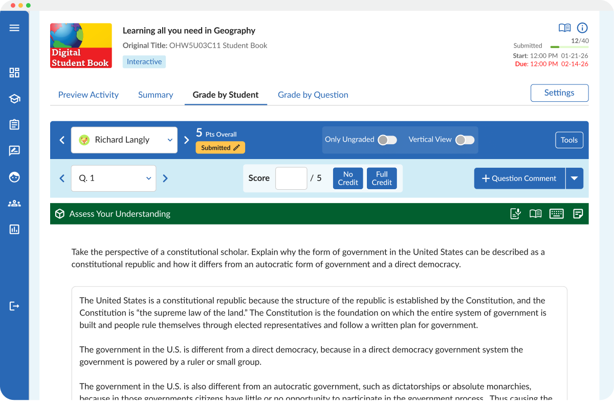
Reporting & Dashboards in Achieve
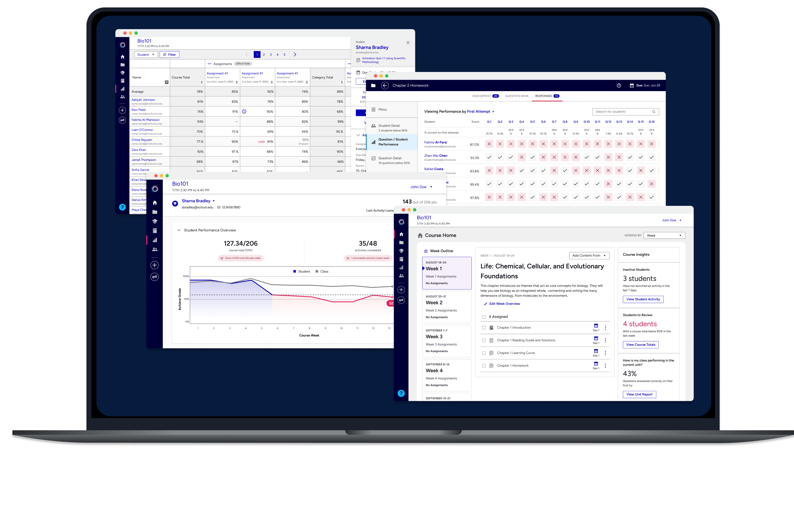
Reporting in an educational platform is about helping instructors make better decisions, faster. Across more than five years as Achieve's primary reporting designer, I tackled that challenge through projects that include a comprehensive student gradebook, a redesigned assessment view, and lightweight in-context alerts. Together, they tell the story of a reporting system built for real instructor workflows.
As Openfield's largest client account, Achieve also meant leading a small team of designers alongside the hands-on design work, coordinating workload, resourcing, and timelines across concurrent projects on the account.
Creating the focal point for a scaling system of reports
Individual student gradebook
The Problem
Achieve is a complex platform, and for instructors the data they need most was buried. To get a clear picture of how one student is performing required pulling information from multiple areas of the product, with no single place to bring it all together. For an instructor asking a simple question like "Should I give this student an extension?" or "Is this student's grade trending up or down?" getting an answer took time that instructors didn't have.
The Solution
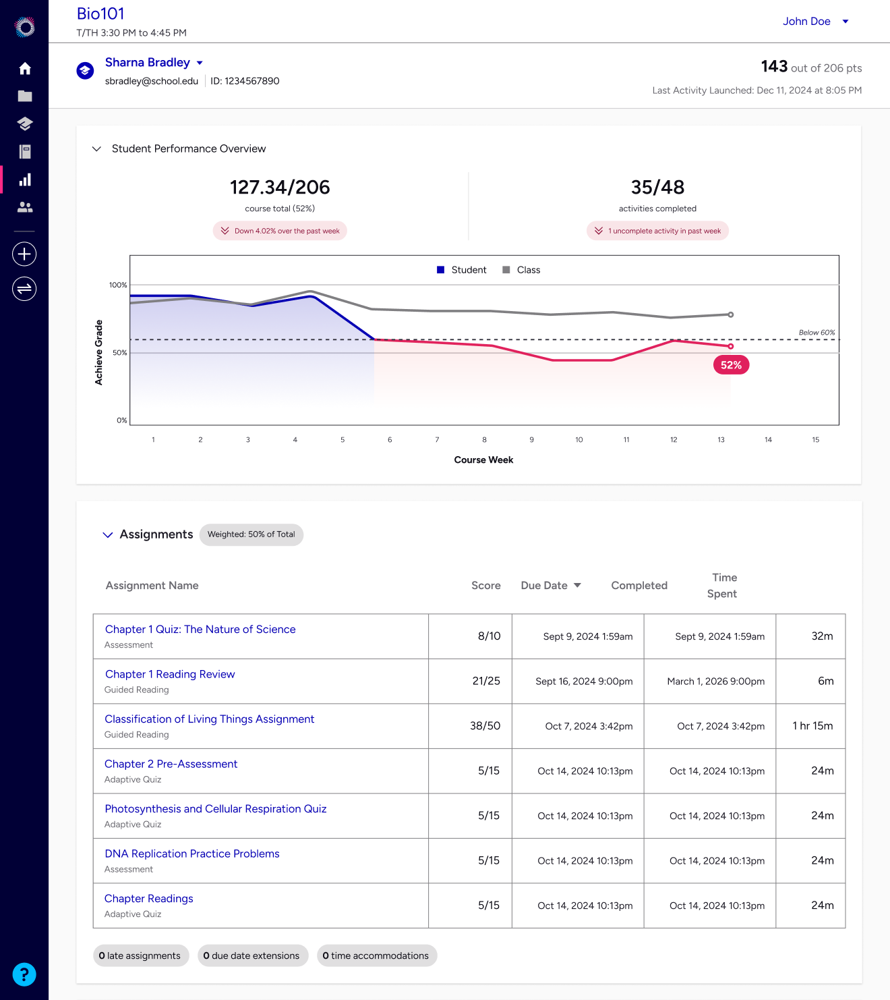
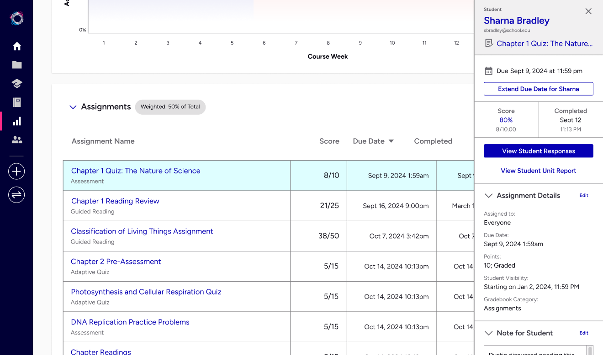
For this project, the team jumped immediately into design, feeling like we had a good understanding of the problem without the need for upfront discovery research. We also felt that the true test for the designs would be when it's in use with actual teachers in actual situations, rather than a Figma prototype with no real-world pressures.
The design was collaborative, with continuous feedback with internal stakeholders and other designers. The team shipped an MVP, then iterated after reviewing product analytics. Updates included a refined header, more data visualization, data exports, and the in-context side panel.
During the process we made several pivots on what data to show the user at what time. For example, in some post-MVP designs we included a separate tab that showed detailed engagement data for the student: When they were logging in, what they were accessing, and how long they spent in the system. For this we ran pre-release user testing, and determined that the feature was initially well-liked, but users struggled to explain how or when they would use it. Instead of taking the time and expense of developing it fully, we pivoted to a lower-cost export feature that we felt would still satisfy the use case.
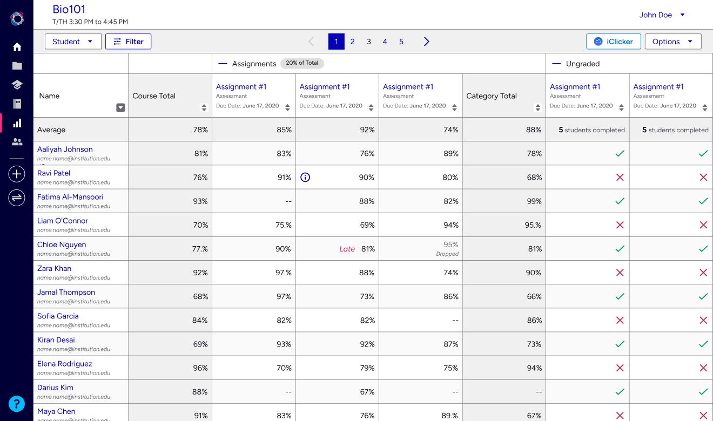
The Impact
Strong retention: Instructors keep coming back to the page, a stickiness pattern not seen in other reporting features, which often see dropoff as the course goes on.
PURE score: Scored highly in an independent PURE usability analysis.
Strong perceived value: At release, a large majority of surveyed users said the feature increased the value of the entire product.
Complex data, at a glance
Assessment responses
The Problem
Achieve's data from student assessments is rich, but hard to use. The previously existing dashboard surfaced a lot of different data points at once, with no easy way to scan for what mattered. Instructors couldn't quickly answer two of their most important questions: Which questions are tripping students up, and which students are struggling?
The Solution
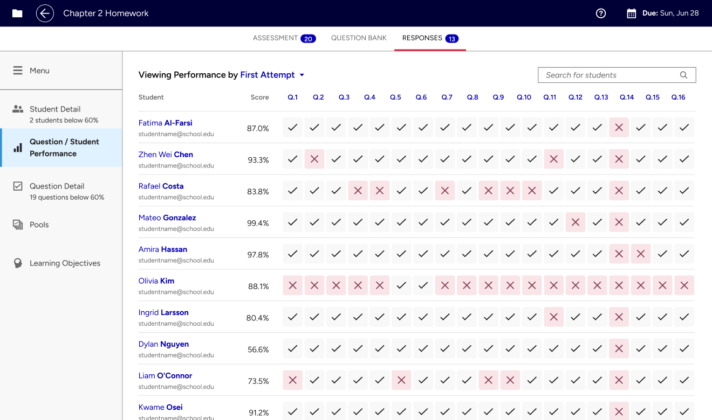
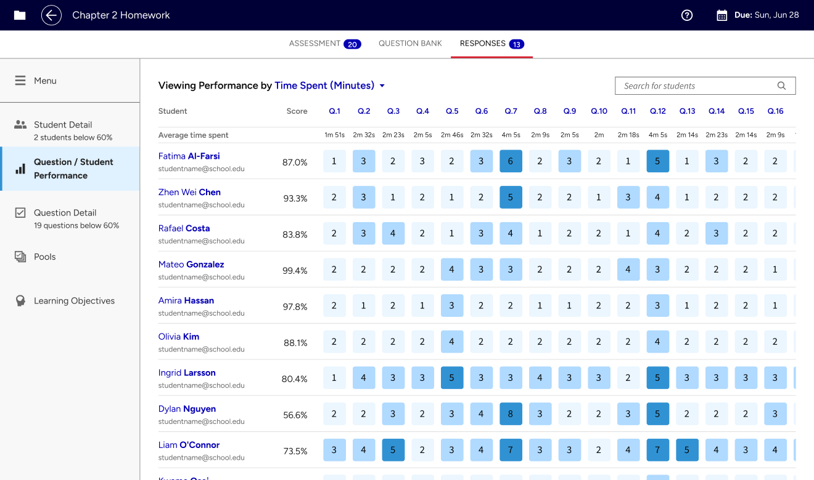
The core challenge was that instructors needed multiple levels of context from the same data. At any given moment, a user might want to see how the whole class performed on a specific question, then shift to how a specific student performed across all questions, then compare time spent across both dimensions. The existing view tried to support all of this through a series of individual charts, each providing one slice of the picture. But moving between them required switching context and scanning separate charts. It added cognitive load instead of helping.
The guiding principle to the design process became one lens at a time, with the ability to go deeper when needed. Multiple rounds of sketching and critique with the full design team generated a range of approaches. Ongoing reviews with stakeholders across product, engineering, and customer experience helped ensure the final interface held up under scrutiny.
The final designs were prototyped using real student data, which made testing more grounded and the results easier to evaluate. Moderated and unmoderated testing sessions showed users responding positively across the board and calling it a clear improvement over the existing dashboard.
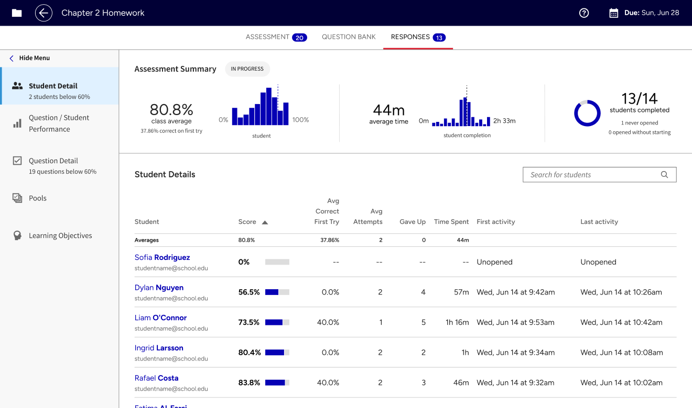
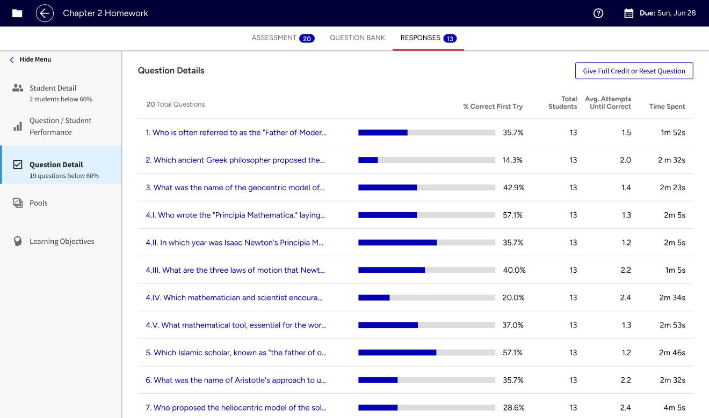
The Impact
User validation: Moderated and unmoderated testing validated the approach. Users called it a clear improvement over the existing view.
Status: Designs are complete, awaiting development.
In-context data insights
Student alerts
The Problem
A reporting dashboard is only valuable if instructors use it. For busy instructors, finding time to seek out data, interpret it, and decide what to do with it is a huge barrier. Those who most needed the information were the least likely to see it.
The Solution
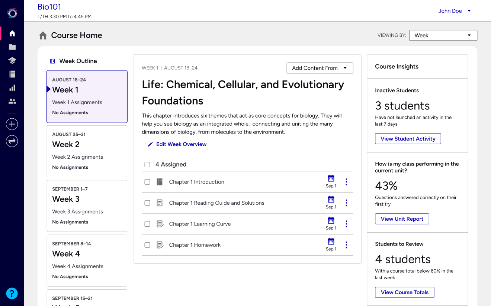
Rather than building another destination for instructors to navigate to, we needed to show the right data where instructors already are. These are smaller, targeted interventions at the moment they are most actionable.
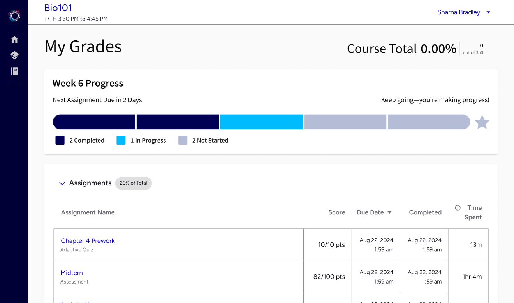
When designing for data, I try to know what questions the user is asking themselves at each point in the journey. Here we are putting high-stakes answers to those questions (How many of my students haven't logged in this week?) in the area of the product that instructors are spending the most time in. Another example is student-facing (Which of my assignments are due this week?).
The Impact
Inactive student alert: During the current beta, 75% of users surveyed said the alert helped them better understand their students' activity in the course.
Student-facing grade view: 85% of students surveyed after launch said the progress bar helped them better understand what work they've done and what's due.
Reflection
Five years of building reporting features for Achieve (as well as 10 years in data journalism) taught me a lesson that runs counter to most instincts: More data is not always better.
The instructors using Achieve are rarely sitting down to leisurely explore a dashboard. They have five minutes before the next class, a student at their door, and a full email inbox to get through. A robust dashboard is only useful if there's time and attention to use it.
The clearest proof of this came from the simplest thing we built: The inactive student alert on the course homepage. A single signal, surfaced where instructors were already spending time, pointing to a clear action. No navigation required, no report to interpret. That simple feature currently has the highest engagement of any insights project across Achieve.